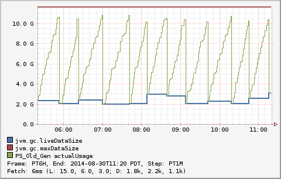

Garbage Collection¶
The GC module registers with the notification emitter of the GarbageCollectorMXBean to provide some basic GC logging and metrics.
Getting Started¶
For using it internally at Netflix see the Netflix integration guide, otherwise keep reading this section.
Requirements¶
This library relies on the notification emitter added in 7u4, but there are known issues prior to 7u40. For G1 it is recommended to be on the latest version available.
Dependencies¶
com.netflix.spectator:spectator-ext-gc:0.37.0
Start Reporting¶
Then in the initialization for the application:
import com.netflix.spectator.gc.GcLogger;
...
// Keep a single instance of the logger
GcLogger gc = new GcLogger();
gc.start(null);
Logging¶
After GC events an INFO level log message will get reported using slf4j. This makes it easy to
GC events in the context of other log messages for the application. The logger name is
com.netflix.spectator.gc.GcLogger and the message will look like:
${GC_TYPE}: ${COLLECTOR_NAME}, id=${N}, at=${START_TIME}, duration=${T}ms, cause=[${CAUSE}], ${TOTAL_USAGE_BEFORE} => ${TOTAL_USAGE_AFTER} / ${MAX_SIZE} (${PERCENT_USAGE_BEFORE} => ${PERCENT_USAGE_AFTER})
The id can be used to verify events were not skipped or correlate with other sources like detailed GC logs. See [[GC causes]] for more details on the possible causes.
Sample:
2014-08-31 02:02:24,724 INFO [com.netflix.spectator.gc.GcLogger] YOUNG: ParNew, id=5281, at=Sun Aug 31 02:02:24 UTC 2014, duration=2ms, cause=[Allocation Failure], 0.4G => 0.3G / 1.8G (24.3% => 16.6%)
Metrics¶
jvm.gc.allocationRate¶
The allocation rate measures how fast the application is allocating memory. It is a counter
that is incremented after a GC event by the amount youngGen.sizeBeforeGC. Technically, right
now it is:
youngGen.sizeBeforeGC - youngGen.sizeAfterGC
However, youngGen.sizeAfterGC should be 0 and thus the size of young gen before the GC is
the amount allocated since the previous GC event.
Unit: bytes/second
Dimensions: n/a
jvm.gc.promotionRate¶
The promotion rate measures how fast data is being moved from young generation into the old generation. It is a counter that is incremented after a GC event by the amount:
abs(oldGen.sizeAfterGC - oldGen.sizeBeforeGC)
Unit: bytes/second
Dimensions: n/a
jvm.gc.liveDataSize¶
The live data size is the size of the old generation after a major GC. The image below shows how the live data size view compares to a metric showing the current size of the memory pool:

Unit: bytes
Dimensions: n/a
jvm.gc.maxDataSize¶
Maximum size for the old generation. Primary use-case is for gaining perspective on the the live data size.
Unit: bytes
Dimensions: n/a
jvm.gc.pause¶
Timer reporting the pause time for a GC event. All of the values reported are stop the world pauses.
Unit:
statistic=max: secondsstatistic=count: events/secondstatistic=totalTime: seconds/second
Dimensions:
action: action performed by the garbage collector (javadoc). There is no guarantee, but the typical values seen areend_of_major_GCandend_of_minor_GC.cause: cause that instigated GC (javadoc). For an explanation of common causes see the [[GC Causes]] page.
Alerting¶
This section assumes the data is available in Atlas, but users of other systems should be able to take the idea and make it work. For all of these alerts it is recommended to check them on instance. At Netflix that can be done by selecting the option in alert ui:

Max Pause Time¶
Example to trigger an alert if the pause time exceeds 500 milliseconds:
name,jvm.gc.pause,:eq,
statistic,max,:eq,
:and,
:max,(,cause,),:by,
0.5,:gt,
$cause,:legend
Heap Pressure¶
Example to trigger an alert if the live data size is over 70% of the heap:
name,jvm.gc.liveDataSize,:eq,:max,
name,jvm.gc.maxDataSize,:eq,:max,
:div,100,:mul,
70,:gt,
percentUsed,:legend